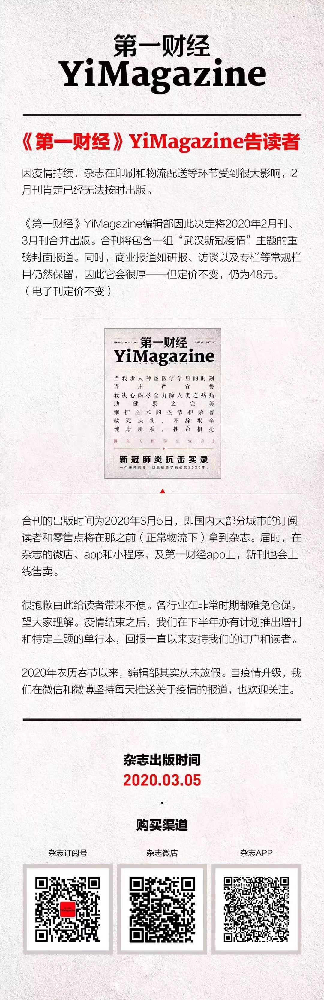

义乌硬核复工：日流量超20万人次的商贸城开市
原文链接 备份链接 记者：杨冰柯 “ 地方政府和企业高效组织，保证正常复工。 ” “咚～咚～咚咚咚……” 舞龙舞狮、敲锣打鼓，2月18日上午九点，义乌国际商贸城与往年一样举行了开市仪式，只是今年的表演人员全都带 …
* *
*
作者 | 第一财经 来莎莎 王珍
在武汉当地，近一个月奋斗在一线的不仅仅有医护人员，还有芯片制造和面板厂的员工。
“实在撑不住了。”TCL华星光电技术有限公司（以下简称“华星光电”）一线工程师李明（化名）告诉记者，从春节前留守公司工作至今，他未曾停工。
李明正处于新型冠状病毒肺炎疫情的风暴中心——武汉。他坦言：“现在这样平时两倍的工作压力已经持续了近一个月，可能还会再持续至三月，加上身处最严重疫区，物资餐饮需求无法完全满足的同时又担心被感染，很多人生理心理确实已经接近极限。”
华星光电部分员工对第一财经记者透露，为了快速补充人手替换一线员工，有一些部门已经开始采取“强制”返工措施，不复工按旷工处理，超过一定时期算自动离职，而这也引来部分员工强烈的抵触情绪。
第一财经独家获得的一份2月15日的华星光电通报称，截至2月15日20:00，武汉华星累计发现发热、咳嗽等异常情况共263人，均已送医治疗，其中经医院诊断排除218人，厂区宿舍自行隔离45人（其中密切或间接接触发热人员隔离25人），1例确诊病例。
2月17日，第一财经记者就武汉工厂复工等询问华星光电，该公司表示暂时不予回应，称此前上市公司已就复工事宜发布过公告。


高强度运转近一个月
据记者了解，不管是否在武汉，主要晶圆代工厂和面板厂在春节期间均正常运转，多家上市公司公告称受疫情影响不大，而这些制造工厂不停转背后，是一线员工长期的高强度运转。
2月12日，TCL集团董事长李东生发布微博称，由于半导体显示产业制程特殊，需不间断生产，每天都有员工上班。疫情压力下，深圳和武汉的TCL华星人依然在岗，保障工厂正常运转，特别是武汉华星工厂，由核心管理层带领7000员工坚守岗位。“因为武汉华星低温多晶硅显示屏占全球供应20%，停产对全球产业链造成冲击。且武汉已经封城，离开厂区风险可能更大。我们严格按照防控要求安排工作与生活，在保持工厂正常运转同时，厂区没有发生疫情。”

▲李东生2月12日微博
TCL科技称，2020年开年至今（2月11日），武汉华星t3面板产线持续满产，并于1月份提前完成岁修，目前产能50K/月，物料和人工可满足当前生产需要，产成品出货通道正常。2020年2月1日至2月10日，t3累计投片量与去年同期持平，预计2月将持续满产运营。
研究机构CINNO Research的报告显示，华星光电2019年在全球智能手机面板厂出货中排第六。在2月17日给第一财经的书面回复中，该机构分析认为，武汉作为此次新冠肺炎疫情中心区，当地企业受到的经营和复工压力一定是最大的。由于面板前段同半导体厂一样都属于高自动化的生产线，人力需求量并不大，而面板厂后段模组产线的自动化程度远不如前段，人力需求较大。可以看到的是，京东方和华星光电等都推出了临时工作岗位的招聘信息，主要都是补充质检、装配、仓储等站点的员工。
武汉华星光电一员工王斌（化名）确认称，这批留守的员工从年前的1月22日持续工作到现在至少20天了，“正常情况下，春节值班最多到初六就可以休假，但是因为今年年前休假的人无法返回武汉，他们只能顶着。”
留守期间，李明一周工作6天休息1天，平时正常工作时间从早8:30到17:30，轮到值班时则从早8:30至20:30。但是，由于目前员工只有正常状态的一半，因此工作强度也是正常的两倍，“实际加班的话也要到晚上，日均工作10-12小时。”
最主要的是对感染新型肺炎的担忧，在身心俱疲的状态下免疫力低下，更易被病毒侵入。“由于行业特殊，员工需要在恒温恒湿的无尘车间维护设备正常运转，所以相当于所有员工在同一个密闭的中央空调系统里。一旦有员工感染，爆发式传播风险会很大”。李明说。
一般而言，晶圆制造厂和面板行业的无尘室洁净度要求较高，比外界更加安全，但如果有员工感染病毒，进入无尘室的工作人员本身就是病毒载体。而且，李明指出，面板行业前段制程人员分布很稀疏，风险很小，但是后端制程（模组段）人员非常密集，“可以说是摩肩接踵，所以这一过程无法保证无尘室的过滤效率。”
强制返汉引争议
换下长期留守员工迫在眉睫，如何尽快让返乡的员工快速上岗成了企业的重点任务。
李明表示，该公司通知，年前休假人员需在2月14日起返回公司上班，如无法上班，则开始记算考勤缺勤，需要通过调休或事假来补齐，否则算旷工。
有员工对第一财经提供的信息显示，一些部门通知2月18日之前员工必须返回公司，“要是当地政府有任何阻拦或者需要协助开证明，都可以反馈给公司，公司想尽办法给每个人解决”。
不过，多名员工表示，所有带有强制性要求的通知都是通过微信群或电话传达，没有正式的文件通知。对此，也有员工反映称，公司返岗并没有强制，只是很多部门私下操作。


返汉员工申请表等材料
有员工表示，华星光电内部还有群建了“复工游击队”，有专人负责整理从各地返汉攻略，分享易放行的路线。

在召集员工返汉复工的同时，也有员工表示，期待公司更进一步加强工厂疫情防控措施。
王斌对第一财经记者说：“传染源没有完全封闭。也就这几天开始，因为武汉开始封闭所有小区，所以公司让员工全部住宿舍，监测体温。但是从1月22日到2月10日里，员工们大都是坐班车或开车往返的，下班以后在武汉接触了谁，有没有接触感染源，这并不可控，而大家还要每天吃食堂、住宿舍、坐班车，在一起开会 。”
在该公司内部流传的一个视频显示，2月14日， 在武汉华星T4综合楼食堂，晚饭高峰期时，人满为患，没有有效防护距离。不过，在2月17天下午5点的T3研发二楼食堂拍摄的图片显示，饭桌上装有隔板，用餐员工也较少。

第一财经记者获悉，华星光电下发的返岗人员防疫管控办法显示，该公司对疫情防疫较为严格：员工提出返岗申请后，先判断疫区，再判断对应疫区相关的分级管理标准，报送环安处和行政处进行后续管理。但有员工何冰（化名）表示，对于自驾回公司的员工而言，只要能顺利回来，有人前一天申请，第二天就可以打卡上班了，并没有隔离。

▲返岗人员分级标准
王斌对此也表示诧异：“因为是武汉的企业，员工大多是武汉市和湖北省内孝感黄冈这些地区，有些同事就是开车往返，现在武汉很多小区都有感染病例，所以这些开车上下班的无法确定一定不会携带病毒。”
就在李东生发出“厂区没有发生疫情”微博的3天后，第一财经记者获得的一份2月15日的华星光电通报称，截至2月15日20:00，武汉华星累计发现发热、咳嗽等异常情况共263人，均已送医治疗，其中经医院诊断排除218人，厂区宿舍自行隔离45人（其中密切或间接接触发热人员隔离25人），1例确诊病例。王斌说，这样的通报并没有让员工安下心来。
员工期待：多一些人文关怀
武汉是我国面板产业重镇，汇聚了京东方、TCL科技、深天马三大头部企业的五条产线。
面板行业和芯片制造业是我国近几年增长较快且前景广阔的行业。由于行业的特殊性，晶圆制造厂和面板厂全年无休，一般在出货淡季维修与更新机台设备。
一方面，企业如果彻底停工，将对企业甚至中国面板行业带来巨大损失。李明表示，半导体行业生产线停工会导致机台精度、寿命受损，生产到一半的产品成为废品，重新复工需要极大成本。
从企业而言，这类工厂的生产线和设备投资巨大，动辄几百亿。如果停产，前期投资短期无法收回，并且很多设备会有闲置损坏风险。
信达证券电子行业首席分析师方竞指出，华星光电的T4产线和京东方的B17产线目前在产能爬坡中，受到疫情影响，爬坡速度会有所延后。不过，面板厂产能开出放缓会加剧面板的供不应求。
另一方面，员工的安全正受到影响，如果管控不当疫情也有继续大范围传播的可能，持续近一个月留守在工厂的员工也希望能够有喘息的机会。
王斌对记者表示，自己不希望公司受到特别大影响，最主要的是两点诉求，一是能在家办公的全部在家办公；二是希望公司能最低产能运行，不要在这个时候还鼓励满产，太耗费人力，给在厂的同事减轻压力的同时，不要采取类似强迫的方式让外地同事复工。
李明也对第一财经记者表示，员工不是不能理解公司，也不是在抵制工作和企业做对，只是希望特殊时期，能够少一点经济利益的追求，多一些对员工的人文关怀。”
他给记者算了笔账，有计划的减产对公司的影响有限。“公司目前满产的产能是每月50K，就是50000片大板（一块大板长1.85米、宽1.55米，后期会切割成200-300块液晶屏幕，面板行业都是以大板来计算产能）。如果2月按半产计算，月产能30K，那么全年出货量只少了3.33%，对整个公司利润影响其实不大；就算京东方、TCL科技、深天马等国内龙头2月全部半产，整个行业全年出货量只会少1.5%不到，因为只涉及武汉公司产能，国内其余城市可以正常生产。


原文链接 备份链接 记者：杨冰柯 “ 地方政府和企业高效组织，保证正常复工。 ” “咚～咚～咚咚咚……” 舞龙舞狮、敲锣打鼓，2月18日上午九点，义乌国际商贸城与往年一样举行了开市仪式，只是今年的表演人员全都带 …
原文链接 备份链接 在史晋川看来，政府包飞机、包高铁、派专车去接农民工，可以在短期内缓解企业的用工压力。“但要想从根本上解决用工问题，要深化配套的社会改革，让农民工也享受到当地经济发展的同等好处和权益。” 全文5412字，阅读约需10 …
原文链接 备份链接 以外来人员就业为主的地区应延迟复工，以本地人员就业为主的地区应视优先复工；适当延迟劳动密集型行业复工，优先放宽非劳动密集型行业复工；重点保障疫情防控必需、城市运行必需、群众生活必需的行业复工 *********** …
原文链接 备份链接 据说武汉本来计划今起全面复工，又临时发了一份文件推后到下周了。 显而易见，当下的情形完全没有达到复工的条件，但是挤牙膏式的延迟，又透露出对于经济需求的不舍，于是陷入两难境地。 本地的企业同样战战兢兢，不少都在催促员工恢 …
原文链接 备份链接 _ 在新冠肺炎疫情中心区域，远比平时忙碌的快递员在街头难见其他人，遇到别家公司的快递员，大家叫不上名字，但都打个招呼，在特殊的时点里惺惺相惜 _ 文 |《财经》记者 俞琴 编辑 | 鲁伟 新冠肺炎疫情在武汉蔓延后，整座 …